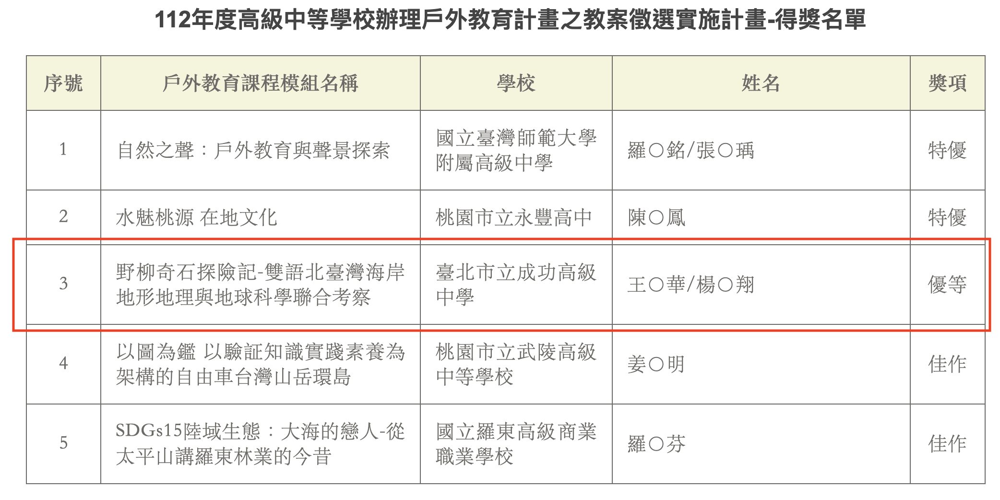
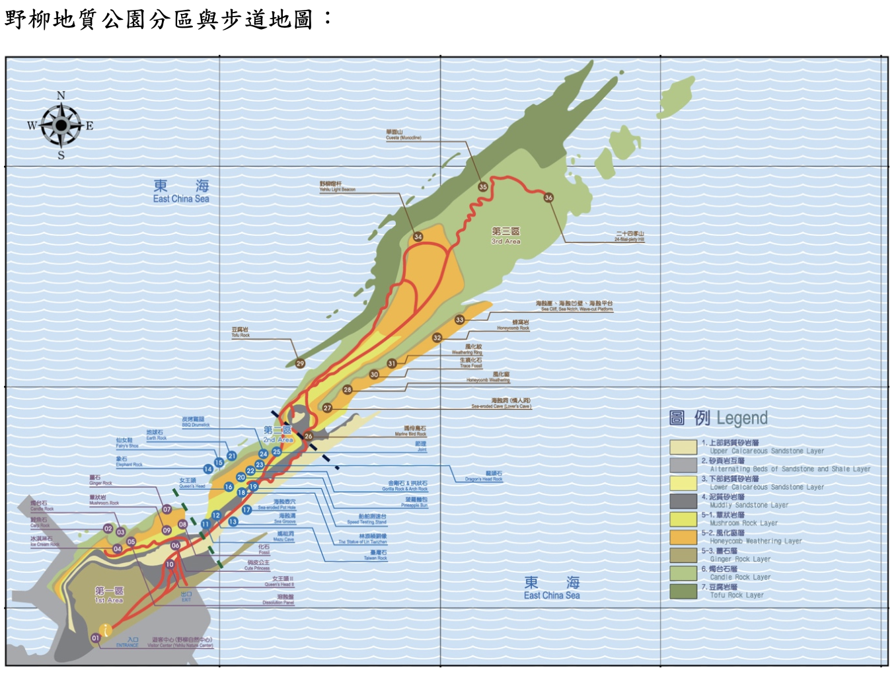
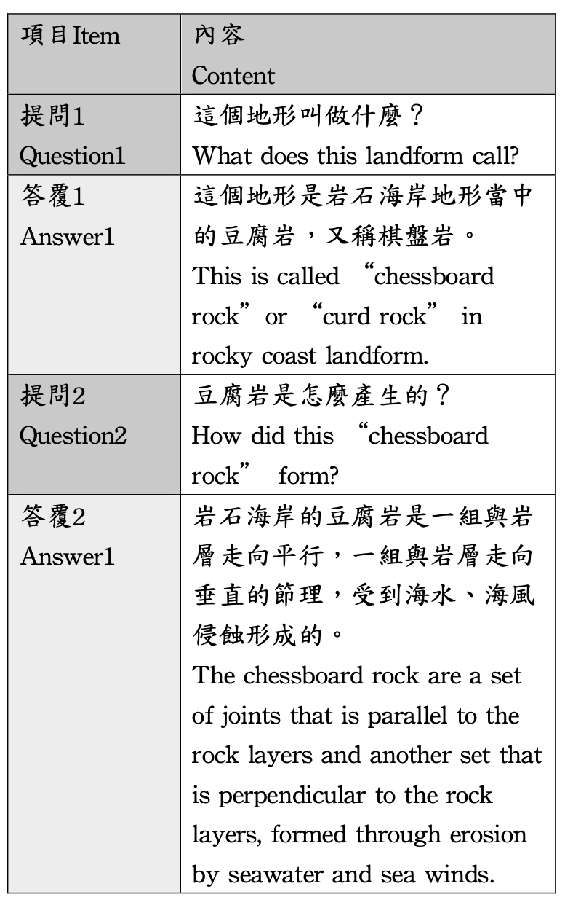
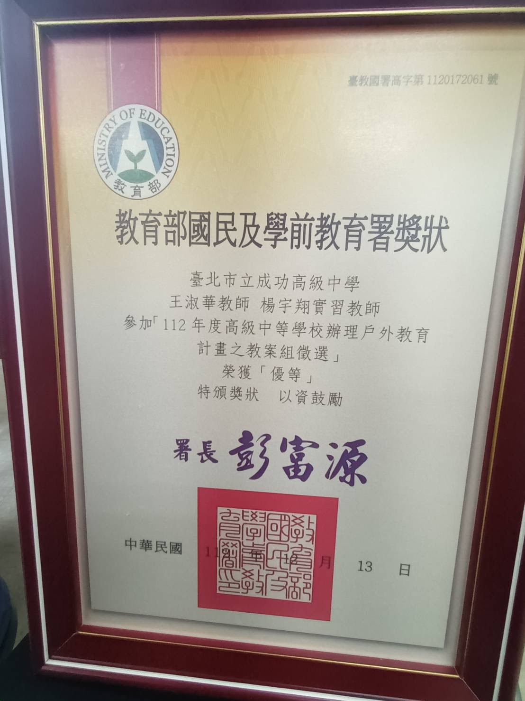

I joined Geographical Information Science Lab in the Department of Geography in National Taiwan University. My academic supervisor is Professor Tzai-Hung Wen, Ph.D.
Teaching supervisor : 王淑華 老師
  本課程為社會領域地理科、自然領域地球科學科結合海洋教育， 期待透過戶外教學的「聽覺、嗅覺、視覺、觸覺（但注意地質公園 不觸碰的特殊岩石區，須遵守規定）」的感官學習的教學設計，讓 高中學生實際了解北海岸的岩石海岸地形、近海生態與環境的污染 與維護、漁村聚落的發展等三個面向。 此外，配合臺灣2030雙語國家的政策「培育臺灣人才接軌國際」 的願景，用雙語力加值專業力，本教案也融入雙語教育，讓高中學 生透過中英雙語能夠呈現臺灣的自然地形，對於所處的土地更具深 刻認識以及如何推廣到非中文的世界的能力與素養。
本教案學習重點包含三點，1. 臺灣北海岸的岩石海岸的地質、地形與成 因，培養高中學生對於臺灣島嶼的基礎認識，並引導學生用攝影科 技搭配中英雙語來呈現臺灣的自然地形。2. 台灣北海岸近海生態與 環境的污染與維護，激發學高中生對於環境保護的情意。3. 探討野 柳漁村聚落的發展，讓高中學生連結自然環境與人類生活的互動。
This course combines geography in the social field and earth science in the natural field with marine education. Looking forward to "hearing, smell, vision, touch" through outdoor teaching (but pay attention to the geopark Special rock areas that are not touched (required to abide by regulations)" sensory learning teaching design allows High school students gain a practical understanding of the rocky coastal terrain, offshore ecology and environmental pollution of the North Coast and maintenance, and the development of fishing villages and settlements. In addition, in line with Taiwan's 2030 bilingual nation policy "cultivating Taiwanese talents to connect with the world" The vision of using bilingual skills to add professional skills, this lesson plan also integrates bilingual education, allowing high school students to Students can present the natural topography of Taiwan through bilingual Chinese and English, and have a deeper understanding of the land where they are located. The ability and quality of understanding and how to promote it to the non-Chinese world.
The learning focus of this lesson plan includes three points: 1. The geology, topography and formation of the rocky coast on Taiwan's north coast Therefore, to cultivate high school students’ basic understanding of Taiwan Island and guide students to use photography subjects It uses Chinese and English bilingual technology to present the natural topography of Taiwan. 2. Taiwan’s north coast offshore ecology and Environmental pollution and protection inspire high school students' affection for environmental protection. 3. Discussion field The development of the Liuyu Village settlement allows high school students to connect the interaction between the natural environment and human life.
2021-1 R Shiny App Project 1: Taiwan Tourism Data Spatiotemperal Analysis

I joined Geographical Information Science Lab in the Department of Geography in National Taiwan University. My academic supervisor is Professor Tzai-Hung Wen, Ph.D.
Any cooperation or suggestion is welcome to me. E-mail is on school system. Phonenumer and the Address is Geography Department of National Taiwan University
Since 7,August 2019 (Wed)